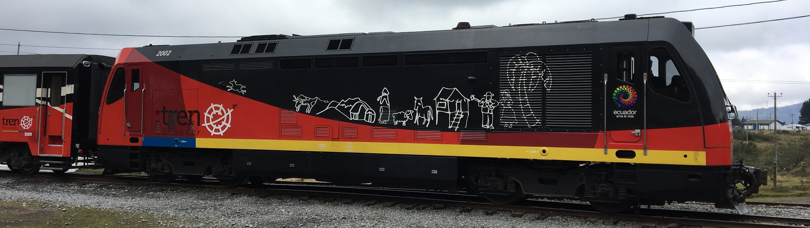
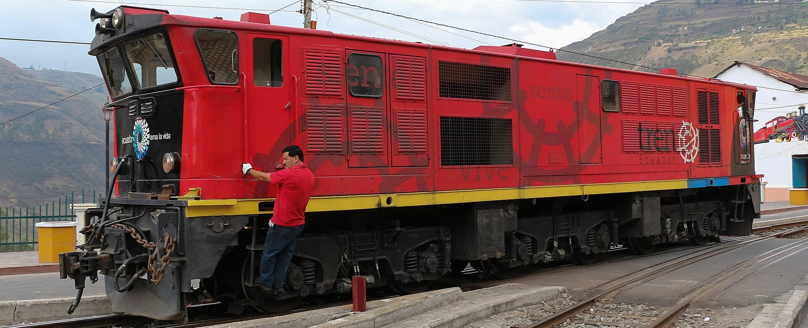
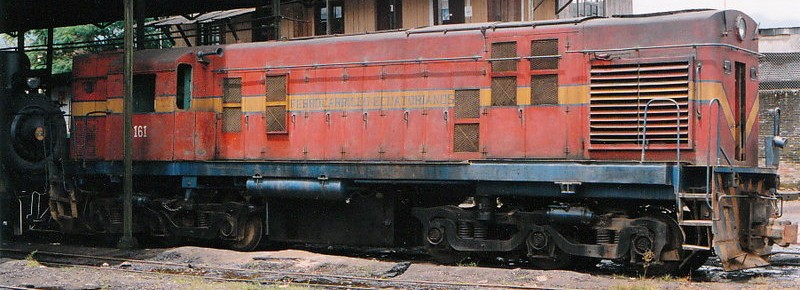
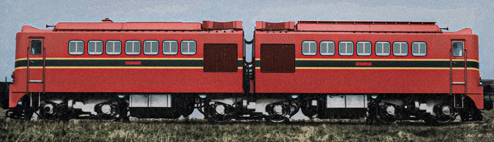

Serie "TD-2000"

Todas de segunda mano procedentes de Euskotren en España, transportadas a Ecuador las tres juntas en el mismo buque en julio de 2015.
| Numeración | Base Taller | Estado | Color | Año | Datos adicionales |
|---|---|---|---|---|---|
| 2001 | Chiriyacu | Apartada | Negro/Rojo | 2009 | ex-2008 Euskotren, vandalizada |
| 2002 | Chiriyacu | Apartada | Negro/Rojo | 2009 | ex-2009 Euskotren, vandalizada |
| 2003 | Ibarra | En servicio | Negro/Rojo | 2009 | ex-2010 Euskotren |
Serie 2400 "GEC Alsthom AD24"

Todas en color gris con bandera nacional y logo ENFE al salir de fábrica.
| Numeración | Base Taller | Estado | Color | Año | Datos adicionales |
|---|---|---|---|---|---|
| 2401 | Riobamba | Apartada | Gris con bandera nacional | 1992 | En taller de Riobamba desde may-2020. |
| 2402 | Ibarra | En servicio | Rojo/negro | 1992 | Mega topes amarillo-negro desde 2007?. |
| 2403 | Riobamba | Apartada | Rojo/negro | 1992 | Reparada en El Berrón, España, jul-2011 Descarriló con el Tren Crucero en jun-2014 cerca de Cotopaxi. Nueva placa frontal dorada desde nov-2025. Apartada por avería en Alausí desde nov-2025. |
| 2404 | Chiriyacu | Apartada | Rojo/negro | 1992 | Descarriló en Nariz del diablo oct-2004
En Chiriyacu desde mayo-2020, sin bogies, vandalizada |
| 2405 | Durán | Apartada | Gris/negro | 1992 | En Durán desde mar-2020 |
| 2406 | Durán | Apartada | Rojo/negro 2014 | 1992 | En Durán desde mar-2020 |
| 2407 | Riobamba | En servicio | Gris con bandera nacional | 1992 | Nueva placa frontal dorada nov-2025 |
| 2408 | Riobamba | Apartada | Rojo/negro | 1992 | Reparada en El Berrón, España jul-2011
Apartada en Riobamba desde may-2020 |
| 2409 | Chiriyacu | Apartada | Rojo/negro | 1992 | Reparada en El Berrón, España jul-2011 |
Serie 160 "ALCo DL535-B"

Todas construídas en Madrid, España y llegadas en barco a Ecuador en 1968.
Al ser los recambios para mantenimiento muy caros y la imposiblidad de fabricarlos en Ecuador se canibalizaron a los pocos años, no duraron mucho en buen estado y máquinas de vapor más antiguas tuvieron que sustituirlas.
| Numeración | Base Taller | Estado | Color | Año | Datos adicionales |
|---|---|---|---|---|---|
| 160 | - | Chatarreada | - | 1968 | Apartada en taller de Chiriyacu en 2003. |
| 161 | - | Expuesta | Rojo/azul | 1968 | En exposición en Durán en mal estado. |
| 162 | - | Chatarreada | - | 1968 | Apartada en taller de Chiriyacu en 2003. |
| 163 | - | Chatarreada | - | 1968 | - |
| 164 | - | Chatarreada | - | 1968 | - |
| 165 | - | Chatarreada | - | 1968 | Apartada en taller de Chiriyacu en 2003. |
| 166 | - | Chatarreada | - | 1968 | - |
| 167 | - | Chatarreada | - | 1968 | Apartada en Bucay. Chatarreada en Durán en 2012/2013. |
| 168 | - | Chatarreada | - | 1968 | Canibalizada en Durán en 1988. |
| 169 | - | Expuesta | Rojo/azul | 1968 | Apartada en taller de Chiriyacu en 2003. En exposición en Quito-Chimbacalle mal estado. |
Serie 150 "Alsthom BBB-150"

| Numeración | Base Taller | Estado | Color | Año | Datos adicionales |
|---|---|---|---|---|---|
| 151 | - | Expuesta | Rojo/negro | 1956 | Expuesta en taller de Ibarra, exterior en buen estado. |
| 152 | - | Chatarreada | - | 1956 | Parcialmente desmantelada en talleres de Ibarra en 2003. Chatarreada en 2008. |
| 153 | - | Chatarreada | - | 1956 | Parcialmente desmantelada en talleres de Ibarra en 2003. Chatarreada en 2008. |
| 154 | - | Expuesta | Rojo/negro | 1957 | En taller de Ibarra |
| 155 | - | Apartada | Rojo/blanco | 1957 | Última de la clase 150 en prestar servicio.
Dejó de funcionar en Alto Tambo en 2003. Trasladada a talleres de Ibarra en 2008. En taller de Ibarra, conserva placa frontal original. |